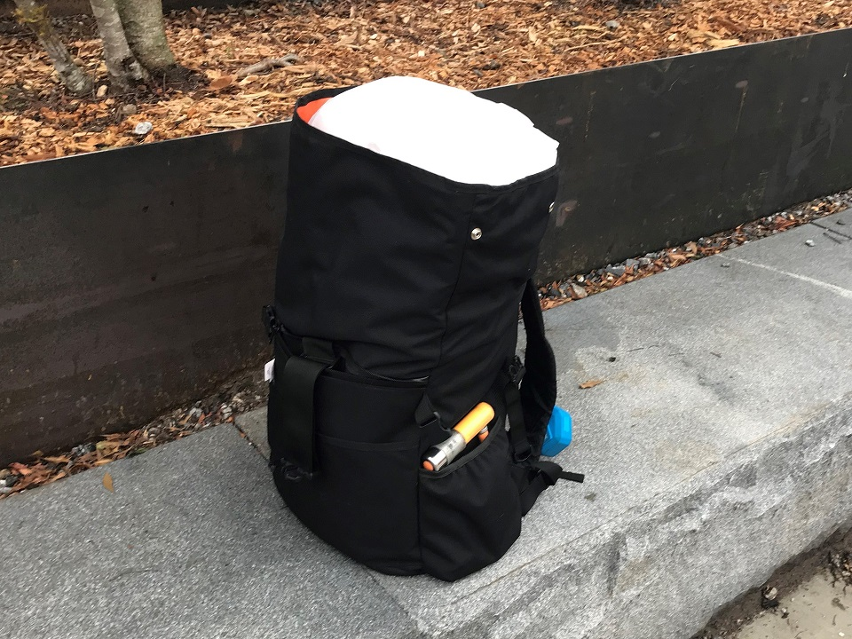

PAL
Modular Bicycle + Popup Shop
5 Month / Team Project
Objective
To design a commuter bicycle that allows customizability and adaptability for carrying various types of cargo through a modular construction.Research
Initially the group observed cyclists on streets corners in Atlanta, interviewed bike riders and bike shops, and took contextual photos.

We then posted this information on a board and made notes about significant findings for each photo and other interesting points we heard during the interviews.
We identified three different target scenarios:
Commuting
The cyclists that we interviewed greatly preferred cycling to work over driving a car, expressing that it is actually more convenient.
Errand Running
Many of them did not own a car at all, or if they did, they still relied on their bike to run errands such as getting groceries, etc.
Recreational
These riders bike for fun and exercise in addition to biking for practicality. They shared the sentiment that “biking is my social scene”.
As well as three different pain points that riders experience in each category:
Preparation
Riding a bike as a commuter isn’t as simple as get on and go. Routes, clothes, position of bags on the bike, and storage for what you might take are all considerations that have to be made.
 Improper Storage
Many cyclists find themselves unable to take things with them because they don’t have the right mountings or bags on their bike. They are forced to improvise or devise inadequate solutions.
Improper Storage
Many cyclists find themselves unable to take things with them because they don’t have the right mountings or bags on their bike. They are forced to improvise or devise inadequate solutions.
Backpacks
Wearing a backpack on a bike during warmer seasons is uncomfortable to say the least. Add the heavier loads that some cyclists carry, such as groceries, and you have a recipe for back pain and a top heavy bike.
Key Items Carried:
Typical Daily Routine
From these insights we were able to create three specific criteria that the bicycle should fulfill:
1.
The bicycle MUST be able to store whatever the rider carries with them.
2.
The bicycle SHOULD allow for spontaneity i.e. on-the-go configuration.
3.
The bicycle COULD facilitate some kind of community building.
Concept Development
During this phase the group developed three refined concepts, one of which was evaluated as having the most value for our users and had met our criteria, and was moved forward.
We took our ideas into VR and sculpted them in Gravity Sketch to get an idea of the form and dimensions in three dimensions. This allowed us to iterate on these concepts as well as sculpting new forms onto the existing ones and evaluating them at full scale. From this experience we decided on the internal truss structure for the bike.
Final Design
The bicycle frame was then modeled in Fusion 360 and 3D printed. All other components are off-the-shelf parts that could be sourced easily by a manufacturer.
A front basket can be inserted into the front of the bike via the triangle peg attachment.
The end of the triangle is turned to lock the basket in place.
The basket is locked and ready to go with you on your bike ride.
The basket easily detaches and has a handle so that you can bring it along shopping.

Brand Launch
The second part of this project consisted of designing a pop-up shop or launch space along the Atlanta Belt Line (a pedestrian and bicycle walkway that goes through the city) that would be the main point of purchase for our yet to be released bicycle. Our objectives are below:
We spent a few days scouting locations along the West End Atlanta Beltline looking for spots that were near local community businesses. We found a newly landscaped area behind Boxcar at Hop City West End that we felt would suit our purposes.
Future Site
Bird's Eye View

 Nearby Brewery
Nearby Brewery
We then started sketching and refining different layouts for the space, eventually modeling our top two and again taking them into VR for evaluation in three dimensions.
Taking into account our size constraints and the number of areas needed, we decided on the left concept and created a finalized VR simulation of the space that could be toured virtually.
 Final Launch Space Design
Final Launch Space Design

Photo Wall
Bike Play Area
 Custom Bike Delivery
Showcase
Custom Bike Delivery
Showcase
 Consultation Room
Rooftop
Consultation Room
Rooftop